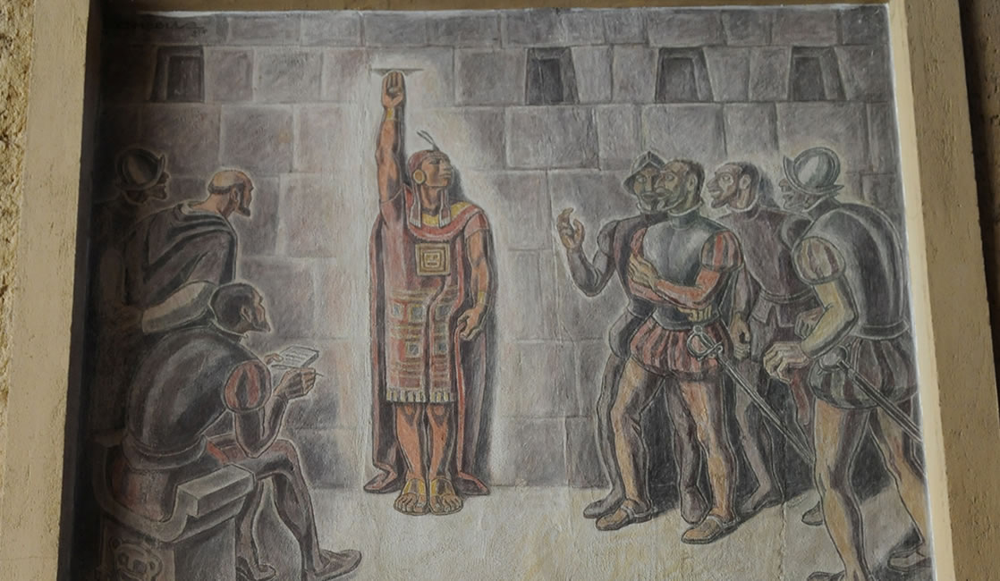
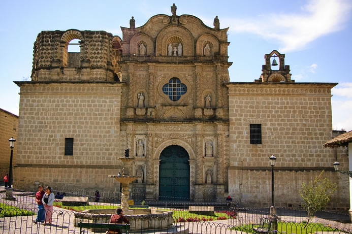

Lugares Turisticos
1. Mirador del cerro Santa Apolonia

Su nombre original fue rumitiana o rumipascana que en quechua significa “Asiento de Piedra”. Formación rocosa de origen volcánico. Ubicado en la parte alta a inmediaciones de la Plaza de Armas, constituye un elemento plenamente integrado al espacio y paisaje urbano. Los colonos la llamaron en un inicio San Francisco de Monte Alberna. Después llevó el nombre con el que actualmente se le conoce como Santa Apolonia por haber sido sede de una capilla en honor a la Santa del mismo nombre.
2. Santuario Virgen del Rosario
Ubicado en el centro poblado El Rosario de Polloc, el templo maravilla a sus visitantes con sus paredes, columnas, techos y piso decorados bajo la técnica de mosaico. El santuario de la Virgen del Rosario es el principal atractivo del centro poblado “El Rosario de Polloc” y no podía ser de otra forma. Quién ingresa a este lugar queda maravillado por su belleza.
3. Ventanillas de Otuzco

Conocida arqueológicamente como necrópolis de Otuzco. Su denominación, “ventanillas”, proviene del aspecto que ofrecen como conjunto de cavidades dispuestas en hileras consecutivas horizontales. Las ventanillas son concavidades de forma cuadrada y rectangular, talladas en bajo relieve en una superficie rocosa de origen volcánico. Algunas evidencias permiten señalar que corresponden a la cultura Cajamarca, que tuvo influencia entre los años 300 y 800 dc.
4. Granja Porcón

El pueblo de Granja Porcón
vive una vida aparte de la locura de la ciudad. Le gusta mostrar a sus visitantes la paz y la tranquilidad que vienen de su vida simple, los cuales traen consigo el poder de sanar su alma.
5. Cumbe Mayo

Está ubicado a 20 Km. al oeste de la ciudad de Cajamarca. A una altura de 3 500 m.s.n.m. Su nombre deriva de Cumbe: Fino y Mayo: Río Lo que en quechua quiere decir “río fino”. Cumbe Mayo está rodeado por un fantástico bosque de piedras que parece reproducir la silueta de piadosos frailes por lo que familiarmente se les denomina “frailones”.
6. Los Baños del Inca
Los Baños del Inca poseen aguas termales de temperaturas superiores a 70ºC (158ºF). Los minerales que las componen poseen propiedades terapéuticas para el tratamiento de afecciones a los huesos, sistema nervioso, piel e incluso se dice que cura la gastritis. Uno de los principales atractivos de este lugar es el Pozo del Inca, ubicado al interior del complejo de Baños.
7. Cataratas de Llacanora
Dos hermosas y grandes cataratas en el distrito de Llacanora
, a 30 minutos de la ciudad de Cajamarca.
8. La Collpa

Es uno de los atractivos turísticos de los alrededores de Cajamarca se ubica a 8 Km del centro de la ciudad, además de ello el llamado de vacas por su nombre, es lo que destaca de este centro turístico.
9. Cuarto del rescate
En este cuarto de rescate estuvo prisionero el inca Atahualpa durante ocho meses, desde noviembre 1532 hasta julio de 1533. Aquí el inca levantó su brazo y trazó una línea hasta donde alcanzaría el oro y la plata que pagaría por su rescate. El inca Atahualpa cumplió. Mandó a traer el oro y la plata de Cusco, Huaylas y Huamachuco, sin embargo, nada impidió que los españoles lo ejecutaran en la Plaza de Armas.
10. Laguna San Nicolás

Ir a la laguna San Nicolás en el distrito de Namora, a 35 minutos de la ciudad de Cajamarca, es ir al encuentro de la paz, tranquilidad y al contacto directo de la madre naturaleza. Este hermoso espejo de agua azulina se encuentra a más de 3 m.s.n.m., está llena de misticismo, encantos, historias y verdor, acompañada de aves como los patos silvestres y los quindes, más conocido como picaflores o colibrís. Puede navegar la laguna en pequeñas balsas de totora.
11. Talleres de piedra de Huambocancha
En el km 8,5 de la carretera a Bambamarca se encuentran los talleres de los picapedreros más hábiles del Perú. Los escultores son tan hábiles que pueden hacer cualquier forma. Si está interesado en algún trabajo, puede llevar el diseño y de seguro lo harán. Un obra puede costar desde S/.1 hasta superar los S/.800.
12. Conjunto Monumental Belén
Construida en el siglo XVIII, se ubica a una cuadra de la Plaza de Armas. Es el templo de estilo barroco más bello de la ciudad y quizá de todo el país. Esta edificación está integrada por la Iglesia Belén, el Hospital de Varones y el Hospital de Mujeres y es uno de los monumentos históricos más emblemáticos de la región.
Circuitos Turisticos
| CAJAMARCA | ||||
|---|---|---|---|---|
| Lugares | Duracion | Salidas | Precio | |
| Complejo Monumental Belén,la Plaza de Armas,el Cuarto del Rescate,La Catedral,la Iglesia San Francisco (museo de arte religioso y criptas),museo etnohistórico, museo médico,Finalmente caminaremos hacia la Colina llamada Santa Apolonia de donde disfrutaremos de la bella vista del Mirador natural desde la Silla del Inca. | 4 Horas | 10:00 am | S/ 30 | |
| Valle Cajamarquino y Río Chonta, donde cruzaremos por el Puente Colgante, daremos un hermoso paseo a caballo (no incluye el alquiler del caballo) , luego de lo cual conoceremos la necrópolis de las Ventanillas de Otuzco (Cementerio de la Cultura Cajamarca), mas tarde iremos al Jardín de las Hortensias Gigantes donde encontrara Artesanía de Cajamarca, luego recorreremos la Hacienda "Tres Molinos" y también el Fundo "Los Alpes" | 4 Horas | 3:30 pm a 7:30 pm | S/ 30 | |
| Bellavista (mirador natural de Cajamarca), Lanzón, Parque forestal , para luego ingresar al Centro Arqueológico de Cumbe mayó, donde encontraremos el famoso bosque de rocas o Fraylones (Formaciones naturales y caprichosas que se han tallado en las rocas por la erosión), El Santuario, cuevas o abrigos, La Piedra del Sacrificio, Altares ceremoniales, Petroglifos (escritura en piedra) Canal hidráulico de 3,000 años de antigüedad y el acueducto (una de las más importantes obras de ingeniería hidráulica de América Precolombina). | 4 Horas | 9:30 am a 2:00 pm | S/ 30 | |
| Centro Artesanal de Tallado en Piedra de Huambocancha donde conoceremos a los artesanos que labran la piedra, luego ingresaremos a la Granja Porcón (Cooperativa Atahualpa Jerusalén),donde disfrutaremos del Bosque artificial de Pinos más grande del Perú, los talleres de artesanías de varones y mujeres, y el Zoológico donde encontraremos diversas especies animales como: Otorongos, Pumas, Osos de Anteojos, Búfalos, Leones, Monos,etc. | 4 Horas | 9:30 pm a 2:00 pm | S/ 30 | |
| Casa de la ex - hacienda La Collpa, la Laguna Artificial, la Capilla de la Virgen del Carmen, en sus instalaciones ganaderas conoceremos el Establo Central, veremos el Llamado de Vacas por su nombre, degustación de Lácteos; Luego iremos a Llacanora (pueblito pintoresco y típico de la sierra),donde caminaremos hacia sus bellas Cascadas y finalmente conoceremos los famosos Baños del Inca, el pozo del Inca y los perolitos(aguas termales). | 4 Horas | 3:30 pm a 7:00 pm | S/ 30 | |